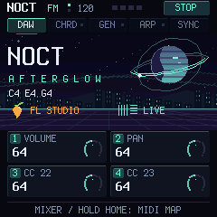
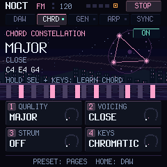
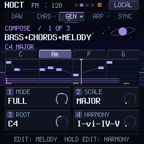
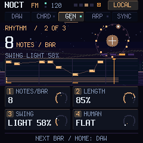
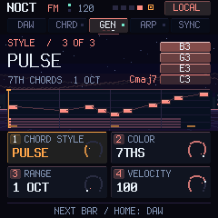
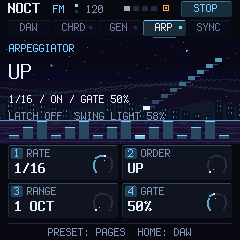
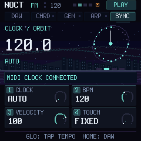

DAW
The knobs control the selected track's mixer. Hold HOME for 0.6 s for MIDI MAP — free CC24–27 for any parameter.
- K1
- Volume
- K2
- Pan
- K3
- Stereo / Send A
- K4
- Channel / Send B
M-VAVE FM-1 · v0.8.0 · USB MIDI
This firmware turns the FM-1 into a DAW controller: keys, chords, a melody generator, an arpeggiator, mixer knobs and transport. The built-in synth is off — your DAW makes the sound.

Notes always go out on channel 1, knobs and transport on channel 16. Nothing to switch between DAWs.
PRESET flips pages, K1–K4 change what the screen shows. HOME returns the knobs to the DAW mixer.
AUTO follows the DAW's MIDI Clock when there is one and runs on the internal tempo otherwise. The DAW script sends BPM both ways.
PRESET goes to the next page. Generator changes take effect on the next bar.

The knobs control the selected track's mixer. Hold HOME for 0.6 s for MIDI MAP — free CC24–27 for any parameter.

One key plays a whole chord. IN KEY builds chords in the key. Hold SEL and press 2–5 keys to store a chord.

The generator writes a 4-bar phrase: motif, answer, contrast, ending on the tonic. Below: chord names and a piano roll.

Density and groove. Swing applies to the generator and to the arp on 1/8 and 1/16.

How the generator's chords play: held, on the beats, on the offbeats or broken.

Arpeggiates the held notes. ARP + ENV latches them hands-free.

Tempo source. On this page GLO is tap tempo, and the new BPM goes straight to the DAW.
Chrome or Edge on a computer. Close your DAW first and keep the official M-UPGRADE at hand in case you want to go back.
A USB cable that carries data.
Not connected
Checking the build…
No file selected
SHA-256, the model and the firmware identity are checked, then the image is written over USB MIDI.
Ready to connect.
0%NOCT FM installer ready.
Settings from 0.7 migrate automatically. The bootloader, USB and flash writing are unchanged in this version. If the device does not start but shows up in update mode (OCT− and OCT+ for 5 s), restore the factory firmware with M-UPGRADE.
FL Studio/NOCT folder from the archive to Settings/Hardware/ inside your User data folder.Ableton Live/NOCT folder to Remote Scripts/ in your User Library.